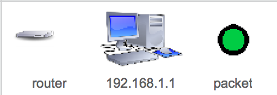
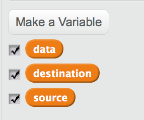
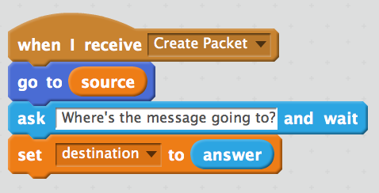
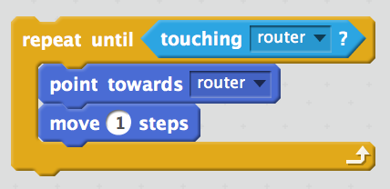
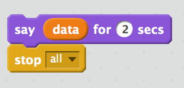

Modeling a Network in Scratch
Table of Contents
1 Getting started
Code It
- Go to the Scratch website and create a new project
- Call the project "Virtual Network"
Code It
- We're going to need three sprites to start with.
- A computer
- A router
- A packet
- Here's the ones I used but feel free to select,import or draw your own.

- We'll name the sprite for the computer with an IP address.
- On most home networks the IP address will fall into the range of 192.168.1.1 up to 192.168.1.254. We'll give our computer the first IP address, so call it
192.168.1.1 - We'll name the Router
routerand the Packetpacket. - Here's a screen-shot of my sprites so far.

Code It
- Next we'll need three variable, to represent the data the packet is going to contain.
- Create a variable called source.
- Create a variable called destination.
- Create a variable called data

2 Scripting the Computer
Code It
- Click on the Computer Sprite so that you can add scripts to it.
- The Script we need is very simple.
- When the sprite is clicked, the variable
sourceneeds to be set to the name of the sprite (in this case 192.168.1.1), and a message needs to be broadcast calledCreate Packet)
When this sprite clicked Set source to 192.168.1.1 Broadcast Create Packet
Try It
- We'll need more than one Computer on our network.
- Duplicate the computer a few times (5 should be enough computers, but you can have more or less if you like)
- Rename each one so that it has a unique IP.
- Alter the script of each one so that it set's the variable
sourceto the IP of the computer.
3 Scripting the Packet
Code It
- The packet script is a little more complicated.
- The first thing we want to happen, is for the packet to appear on the computer that has been clicked.

Code It
- Next the packet needs to be provided with some information. The variable
sourcealready contains the sender's IP, but the packet needs to know where it is going and what data it should carry.

Try It
- Now get the packet to ask for a message and save the user's input in the variable
data
Code It
- For the next part we'll need a loop.
- We'll use a
Repeat untilloop to get the packet to move towards the router, until it touches it.

Try It
- Once the packet has reached the router, it'll need to move off towards the computer that is currently stored in the variable
destination - Try to use another
Repeat untilloop to do this.
Code It
- Finally when the packet arrives at it's destination, it can say the message that is stored in
datafor a couple of seconds and then the script can stop.

4 Checking it works
Run It
- Run your script. It should operate like the video below.
5 Extension Activities
Badge It
- Alter your network model so that it includes a DNS look-up.
- The sending computer should ask for a name to send to the packet to.
- The IP address should then be searched for from a couple of lists.
- The packet can then be sent to the looked up IP address.